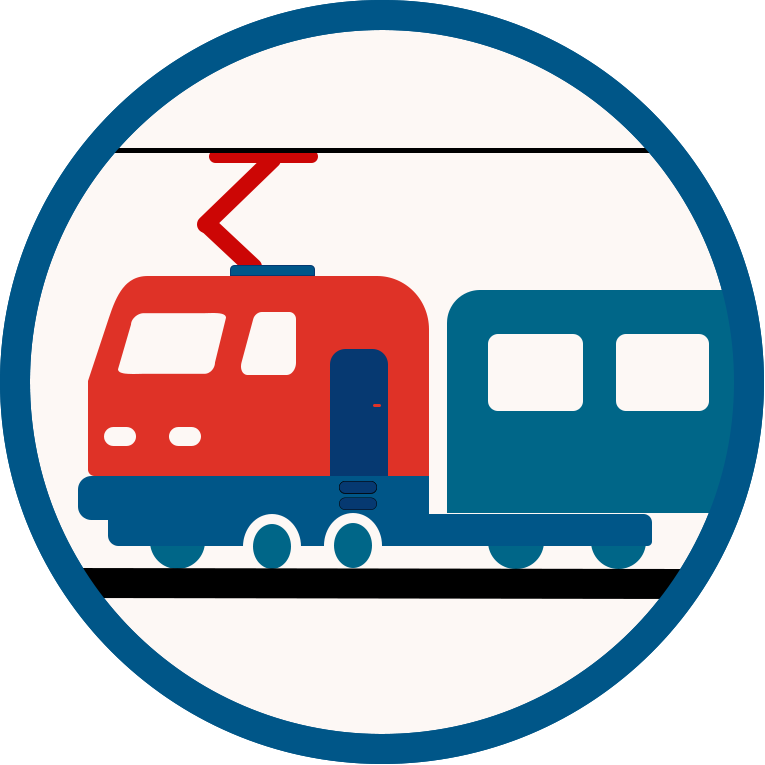

<nav class="navbar">
  <div class="navbar-left">
    <button class="hamburger-btn" (click)="layout.toggle()" [attr.aria-expanded]="layout.mobileNavOpen()"
      aria-label="Menü">
      <span>{{ layout.mobileNavOpen() ? '✕' : '☰' }}</span>
    </button>

    <a routerLink="/home" class="logo">
      
      <span class="logo-text">Vasúti Járműállományok Közösségi Adatbázisa</span>
    </a>
  </div>

  <div class="navbar-right">
    @if (auth.isLoggedIn()) {
    <a routerLink="/profile" class="nav-item">
      <div class="user-info">
        <div class="user-avatar">{{ auth.currentUser()?.name?.charAt(0)?.toUpperCase() }}</div>
        <span class="user-name">{{ auth.currentUser()?.name }}</span>
      </div>
    </a>
    }
  </div>
</nav>